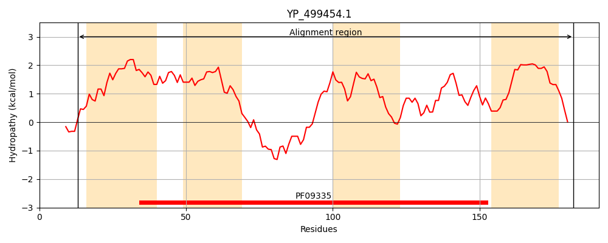
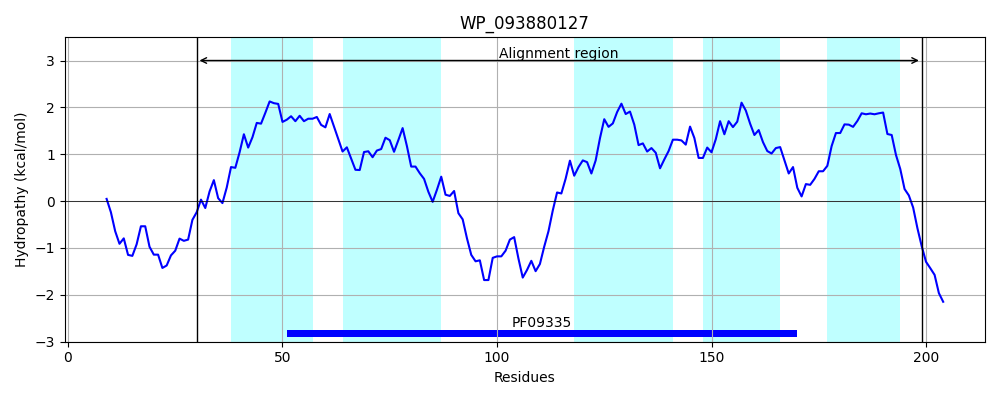
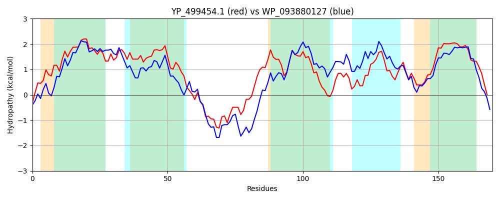

Hit Accession: WP_093880127
Hit TCID: 9.B.27.1.6
Hit Description: gnl|BL_ORD_ID|21620 gnl|TC-DB|WP_093880127.1|9.B.27.1.6 TVP38/TMEM64 family protein [Terribacillus saccharophilus]
Mach Len: 170
e:0.000000
Query TMS Count : 4
Hit TMS Count: 5
TMS-Overlap Score: 4.100000
Predicted Substrates:None
BLAST Alignment:
Score: 327 , Bit scores: 130 bits, E-value: 2.9e-38, Alignment length: 170, Percentage identity: 34
Query: 13 FRQFGYLPGFILLYIRAIIPVFPLALYILINIQAYGPILGILISWLGLISGTFTVYLICKRLVNTERMQRIKQRTAVQRLISFIDRQGLIPLFILLCFPFTPNTLINFVASLSHIRPKYYFIVLASSKLVSTIILGYLGKEITTILTHPLRGILMLVVLVVFWIVGKKLE 182
+ G +PG L ++ A +P PL +++L N AYG + G L SW+G G TV+ + +R +T + ++ V R+ ++DR G PLFILLCFPF+P+ +IN VA LS I + + + + K + + Y+G +T+ +P++ +++ V +++FW+VGK +E
Sbjct: 30 YENLGPIPGIGLPFLEAFLPFLPLVVFVLTNTVAYGLLWGFLYSWIGTSLGAITVFWLIRRYQHTRVINWLRHNKQVNRITEWLDRHGFGPLFILLCFPFSPSAIINVVAGLSRISVQQFALAVFLGKALMIFSIAYVGDSLTSFAENPIKTVVVAVAIILFWMVGKYVE 199 | Protein Hydropathy Plots: |
|---|
|  |  |
Pairwise Alignment-Hydropathy Plot:
|
|---|
|  |